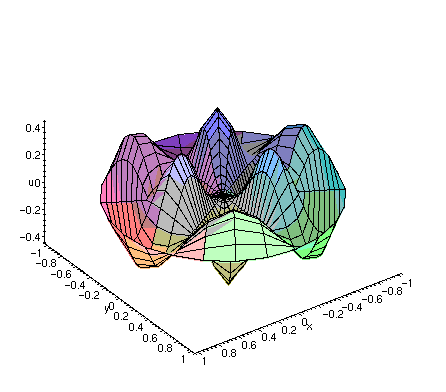

About me,
Current maths undergrad at Queen Mary's University of London, with specific interests in cryptography, programming and mathematics. I'm also a Kickboxer fighting nationally three times, a rugby player competing for QMRFC 1st team and a music fan playing the electric guitar for over 5 years.
Longtime programmer , no professional experience but have coded many projects for fun such as chess bot, password brute forcing algorithm, path finding algorithms and a fractal generator . I used a multitude or languages including python, java, c# and many more. I have a genuine passion for programming and had great fun coding this website and will continue improving it. I’m also a passionate mathematician evidenced by my pursuit of a mathematics degree. I hope to incorporate mathematics onto this website, maybe by uploading all my notes here? This idea has yet to be explored but please check in to see progress.
This website will receive regular updates as my coding abilities increase, and hope to create a mathematical database on here with LaTeX incorporated using APIs. This website was made using HTML, CSS, JavaScript and JQuery, and serves to display my abilities as a front-end programmer, designer and showcase my achievements and aspirations.
Education
Preistlands School
Located in Lymington, Hampshire, England, Preistlands is a co-educational comprehensive school that I attended from 2015 - 2020 , completing 10 GCSEs, engaging in extracurricular activities, most notably their rugby and basketball team. Preistlands is where I was first introduced to Python and networking, in year 9 (14).
5 Years
10 Subjects, those being:
- Mathematics - grade 8
- Biology - grade 8
- Chemistry - grade 7
- Physics - grade 6
- Computer Science - grade 6
- Geography - grade 6
- Music - grade 5
- English Language - grade 5
- English Literature - grade 5
- Fine Art - grade 4
Brockenhurst College
Located in Brockenhurst, Hampshire, England, Brockenhurst college is a sixth form college for ages 16 and onwards, where I had attended from 2020 - 2022. Here I undertook 3 A levels and 1 GCSE (which i did not complete), gained a comprehensive understanding of C# and advanced level Mathematics. I was also a sport scholar, being part of the TASS scheme.
2 Years
4 Subjects, those being:
- A level Mathematics - grade C
- A level Biology - grade B
- A level Computer Science - grade B
- GCSE Chinese (Mandarin) - predicted grade 7
Heriot Watt University
Renowned public research university based in Edinburgh, Scotland, Heriot-Watt University is known for its strong reputation in various fields, particularly in engineering, business, mathematics, computer science, and the physical sciences. I had attended for a foundation year, where I completed their Mathematics and Computer Science foundation degree. I gained a deeper understanding of mathematics with the foundation focussing on calculus and elementary number theory. Once again I was a sports scholar for Kickboxing, and attended basketball and boxing sessions at the university.
1 Year
1 Subject, being:
- A foundation in Mathematics, Physics and Computer Science - grade 1st, 77%
Queen Mary's University of London
Queen Mary University of London (QMUL) is a leading public research university located in London, England, Regarded for its research-intensive environment and academic excellence across various disciplines. The university is particularly renowned for its strengths in the fields of medicine, dentistry, law, economics, mathematics, computer science, engineering, humanities, and social sciences. I am a current student here at QMUL, completing my Mathematics degree. Here I have already leant an immense amount of mathematics and programming skills, where I have particularly enjoyed our "Introduction to Algebra" course, my first taste of some proper pure mathematics. Here I hope to develop many transferable skills and apply them to the real world through projects, such as this website. I intend to work within the programming, cyber security and the IT industry. I am a current member of Queen Mary's student union, playing for the 1st QMRFC team, and fighting in Muay Thai.
3 Years
1 Subject, being:
- Mathematics BSc with Hons - grade Pending
Portfolio
Fractal Generator
Coded in Python using numpy, matplotlib.
In Progress
Chess Bot
Coded in Python and runs in the console.

In Progress
Path Finding
Coded in C# and runs in the console.
In Progress
Password Brute Forcing
Console Python application to brute force passwords.

In Progress
Auto Trader
Coded in Python, uses APIs and predicts buy in and sell.
In Progress
Calculus Calculator
Coded in Python and runs in the console.
In Progress
All code can be found on my github. Please note I'm currently in the process of uploading my code (if you can't already see it).
Mathematics
This section is currently under development and will, in the future, contain all of my lecture notes and mathematical documents as a form of central storage.
Current favorite equation,
The Normal Distribution:\[f(x) = \frac{1}{\sigma \sqrt{2\pi}} e^{-\frac{(x - \mu)^2}{2\sigma^2}}\]
Basis of the central limit theorem.
I currently have personal interest in Algebra due to the formation and functionality of groups, rings and fields. These abstract concepts have piqued my curiosity and is my current favorite module, due to the level of abstraction.
I have also enjoyed axiomatizing the probability function.
Axioms: Kolmogorov's Axioms,
Positivity: \[\forall~E\in\Omega~\exists~\mathbb{P}(E)\geq 0.\]
Normalization: \[\mathbb{P}(\Omega)=1.\]
Additivity: \[\mathbb{P}\left(\bigcup_{i = 0}^{\infty}(E_i)\right)=\sum_{i=1}^{\infty}(\mathbb{P}(E_i)).\]
Contact me,
I'd be more than happy to talk to anyone who has any enquiries or questions. If you wish to contact me, please contact me at my email, or my phone number.
Or you can contact me through my social media accounts at my instagram or my linkedin.